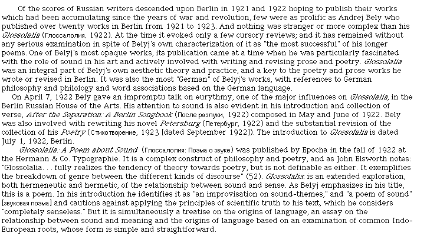

Notes Introduction
Professor Thomas Beyer
Middlebury College
These notes are provided so as not to interfere with the reading of the text. Originally in the early 1990s they were intended as an appendix to the work. Technology now makes possible the use of hyperlinks, some to my own notes, but others to outside electronic resources. Links are clearly recognizable in the English text. They replace page numbers, stars, numbers, dots, etc. My intention is to avoid distracting the reader from the business of reading. The reading of a hypertext document permits individuals to read in their own way. One might read an entire section and then consult the notes, or skim through a given paragraph or section checking the hyperlinks before reading the text more thoroughly and thoughtfully.
Andrei Bely's erudition or at least his familiarity with the writings of his day was encyclopedic. He was at home in Russian and German, read widely in the fields of philosophy and linguistics. Like most educated Russians he also knew French and had an elementary familiarity with Greek and Latin. He was fascinated by Greek mythology and could like other educated Russians make allusions to the Old and New Testaments, convinced that his readers would understand the references. Finally he was well versed in contemporary mystical literature (Theosophy, Anthroposophy, Cabala, Gnosticism, Eastern philosophy)
All of this makes enormous demands on his readers. In providing the notes I have been guided by a sense that not every one can be expected today to control these areas of discourse, even while in many cases one or more areas might be familiar. I have chosen to err in the direction of broader if not deeper coverage. Interested readers will surely be able to go further. I have written a lenghty article whicxh cna also serve as an introduction to the work. "Andrej Belyj's Glossalolija: A Berlin Glossolalia." Europa Orientalis, XIV, 2 (1995), 7-25.
Words in brackets [ ] in the English text are transliterations of Russian words whose sound elements are important for the overall effect. I have also used / and ( ) to indicate alternative translations.
This is a work in development and any and all comments, suggestions, improvements will be appreciated and carefully noted. I encourage you to contact me.
I have found the following links particularly useful and you might want to bookmark them.
Robert Beard's exceptional list of electronic dictionaries.The Merriam-Webster on line dictionary (with etymologies) of English.
Electronic versions of works by Rudolf Steiner.
More about Rudolf Steiner and Anthroposophy.
The Perseus Project on Greek and Latin Classics
Quick Reference to Classical Myths and Heroes
Andrei Bely. Andrei Bely, the pen name of Boris Nikolaevich Bugaev, was born in 1880, the lone and lonely child of a mismatched marriage between his mathematician father, Professor Nikolai Vasilievich Bugaev, and the beautiful and musically talented Aleksandra Dmitrievna, nee Yegorova. Boris Bugaev grew up in the Arbat district of Moscow. Intelligent and quick-witted, he was constantly drawn between the two poles represented by his father and mother. The duality of their relationship was to be reproduced in his personality and make itself felt throughout his artistic career and adult life. Surrounded mostly by relatives and adult friends of the family in his early years (his father was already over forty at his birth), he kept himself the center of attention only by acting the part of a child. Consequently, he grew old and yet never grew up. Already in school he displayed his independence and individuality by skipping classes for several weeks and going instead to the library, where he simply devoured books. This particular incident in his life, this "transgression," was to have constituted the central event in the "Transgression of Nikolai Letaev." In subsequent editions the heading for the first chapter, The Christened Chinaman, became the title of the entire novel, when the work never progressed to this autobiographical moment.
Boris enrolled at Moscow University in 1899 in a course of studies in the natural sciences. After graduating in 1903, he enrolled for a second degree in philosophy which he never completed. Failure to pursue things to their conclusion is another characteristic trait of Bely, but his inability to finish his second degree is at least understandable. In 1902 he had already published his first major work, Symphony (The Second, Dramatic One), in which he tried to capture in prose the magic of music. In this first decade of the century Andrei Bely (the pseudonym he had chosen to avoid embarrassment for and confusion with his father's name) became a widely published poet, prosaist, critic and essayist. For a while he was the most prolific and polemical theorist of the Symbolist movement in Russia. At the same time he was acquiring an encyclopedic, albeit at times superficial, knowledge of almost everything under the sun, but especially of philosophy and aesthetics. He read so many works, was influenced by so many figures and traditions, that it is difficult to believe any attempts to separate neatly and divide precisely these influences into periods, as Bely and his biographers often do. Vladimir Solovyov, Nietzsche, Schopenhauer, Kant, Blavatsky, Besant, Steiner, all fascinated this impressionable young man at least temporarily. If there is any progression, it can be seen only in the broadest terms as one passing through Orthodoxy to Rationalism and finding its synthesis in mysticism. In the end Bely apparently found the answers to his questions in the rational religion of Rudolf Steiner, Anthroposophy.
By 1910 at the age of thirty Bely had insured for himself a place in the history of Russian letters. Four prose symphonies, a major novel (The Silver Dove, 1909), three major collections of poetry, over two hundred articles, essays and reviews and his monumental work Symbolism were all being read and discussed. Eventually Symbolism would lay the groundwork for the Russian Formalist movement, initiate a school of statistical critical analysis later carried on in the Soviet Union and the United States, and indirectly by its influence on Formalism, have an effect on the later New Critics and Structuralists. Yet Bely went abroad at the peak of his career, and by the time he returned the Symbolist concerns, persons and movement had been replaced in the public's mind. The brash challenges of the younger Symbolists seemed mild and conventional compared to a new generation of screamers and shouters, such as Mayakovsky.
If Bely's popularity declined in the second decade of the century, at least his talent did not suffer. In the teens he wrote and published the novel upon which much of his reputation rests: Petersburg (1914). This most important event of his literary life was matched by the single most important influence for the rest of his life: his meeting with and acceptance of Rudolf Steiner. Ten years after the death of his father, Bely finally found a new father figure, a spiritual advisor, one who could show the way and lead him through this earthly existence. The story of Rudolf Steiner and Andrei Bely, if and when it ever becomes fully known, will certainly clarify much about Bely and his art. Bely settled with Asya Turgeneva, his companion and later his wife, in Dornach to work on the construction of the Goetheanum. In 1916 he returned to motherland Russia ravaged by war and soon to be racked by revolution. Bely like Blok eagerly accepted the Revolution as the long anticipated and awaited Apocalypse. In the next few years he participated fully in trying to build the new society. Bely lent his hand to the training of cadres of writers for the Proletkult. There had always been something of the frustrated teacher in Bely, reflected in the various introductions, prefaces, forewords to his works, or the several hundreds of pages of footnotes and commentary to Symbolism. Meanwhile he continued work on various manuscripts which would eventually see the light. It was primarily a period of prose: Petersburg, Kotik Letaev, Notes of an Eccentric and a series of critical works.
Bely continued to write prolifically in the 1920's in spite of his complaints that publishers were ignoring him. In the first years of the decade he turned his attention to his father in the poem "The First Encounter" and the novel, The Christened Chinaman. Having apparently resolved for himself the image of his father, Bely was hit by a severe loss with the death of Aleksandr Blok, symbolist poet, friend, spiritual brother. In November of 1921 Bely, unable to cope with the physical hardships of life in Russia, departed for Berlin. Here he was disappointed by Asya, who had disowned him for a new lover, and he felt betrayed by Rudolf Steiner's restrained and reserved attitude toward him. In spite of these disappointments or perhaps because of them, Bely provided an almost nonstop stream of works for Berlin publishers. In a two year period he published nine original works and several reprints of older works, including a rewritten version of Petersburg. Bely left Berlin and returned to Russia in October of 1923. In the next ten years he would produce two major novels, three volumes of memoirs and two major critical studies. He died of a cerebral hemorrhage in January, 1934.

To my knowledge the Russian text has been reprinted twice. The 1922 Berlin edition was reproduced with a preface by Dmitrj Tschizewskij 1971 (Munich: Slavisches Propyläen, Band 109, 1971). The text was later reprinted in Tomsk in 1994. An electronic text version of the 1994 edition can be found at the Russian Virtual Library.
PREVIOUS | INDEX | NEXT